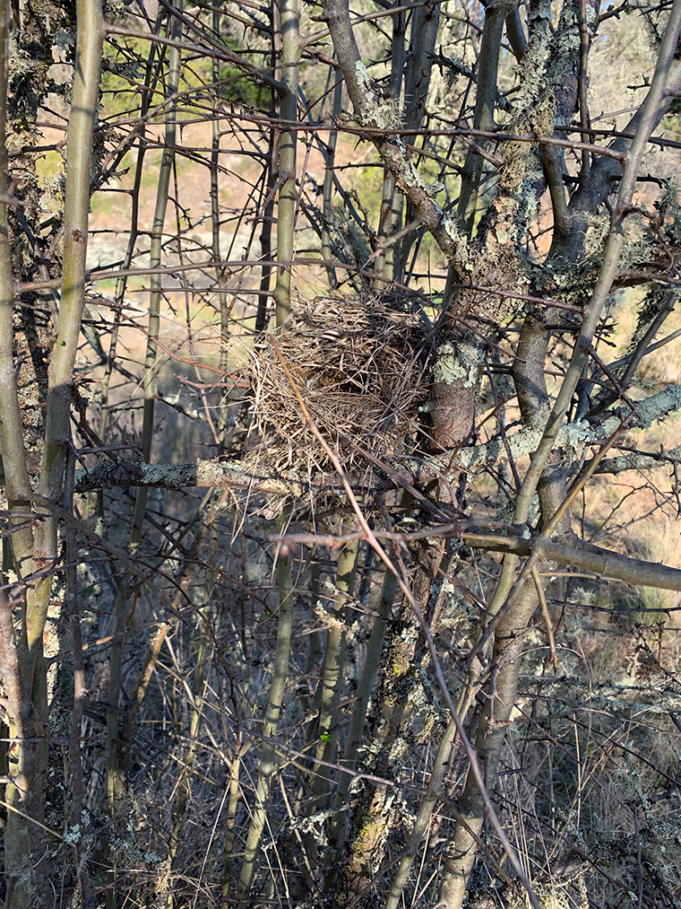
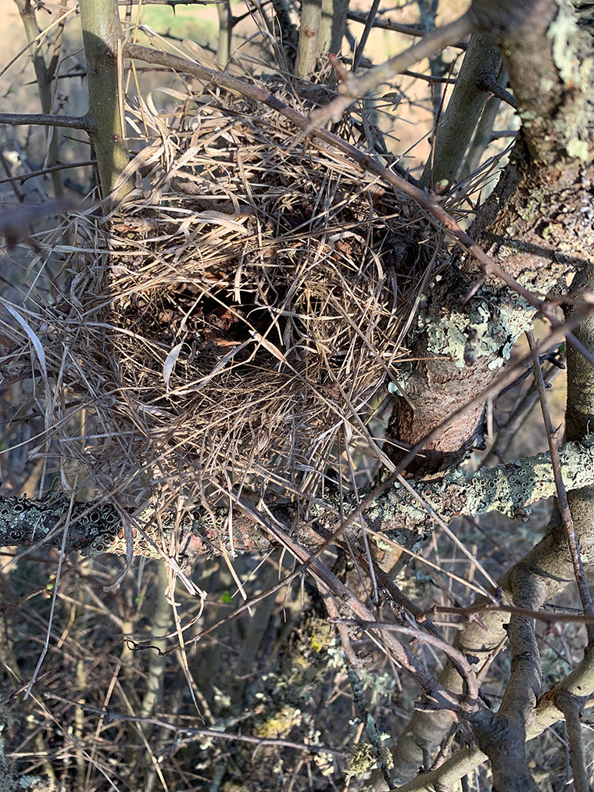

ð) Hreiður (nests)

Birds' nests are connected to mixing bowls and spiders' webs and bees' hives (beesnests), babushka dolls and burial mounds. They are microscopic and cosmic, spiritually fortifying forms which wrap, bend, twist, shape, bow, snug and furl.

Practicality and beauty are better than compatible and the sublime and romantic are best communicated by simplicity. Nests harbour eggs, the young, ancient beings. Fashioned and guided by animal sensations and signals from cycles, feelings combined with the controllable substances of the earth; such creatures as ourselves would understand.
Country-mice-woodland creatures and other fragile souls squirrel and rustle things away in them for their own benefits, stitching a fabric of fibres of fortitude in precarious conditions to unfamiliar beings, habitations of wrens, finches, Holzleute and moosleute.


Compare to those irish monk shelters and ref J Ramirez using biblio
So then the water-mother
the water-mother, air-lass
raised her knee out of the sea
her shoulderblade from the wave
for the duck a nesting place
sweet land to live on.
That duck, sweet bird
glides and hovers; it
spied the water-mother's knee
on the bluish main;
thought it was a grass hummock
a clump of fresh sward.
It flutters, it glides
and it lands on the kneecap.
There it builds its nests
laid its golden eggs:
six eggs were of gold
an iron egg the seventh.
It began to hatch the eggs
to warm the kneecap:
it hatched one day, it hatched two
soon it hatched a third as well.
At that the water-mother
the water-mother, air lass
feels that she is catching fire
that her skin is smouldering;
she thought her knee was ablaze
all her sinews were melting.
And she jerked her knee
and she shook her limbs:
the eggs rolled in the water
sink into the sea's billow;
the eggs smashed to bits
broke into pieces.
The eggs don't fall in the mud
the fragments in the water.
The bits changed into good things
the pieces into fair things:
an egg's lower half
became mother earth below
an egg's upper half
became heaven above;
the upper half that was yolk
became the sun for shining
the upper half that was white
became the moon for gleaming;
what in an egg was mottled
became the stars in the sky
what in an egg was blackish
became the clouds of the air.
Kalevala 1:195-245